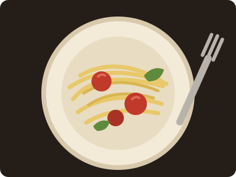
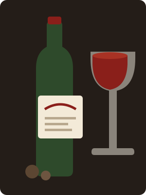

Antipasti
Small plates to open the evening, made for sharing

Primi
Pasta rolled and cut by hand every afternoon

Dolci
Sweet endings and something strong to sip
A coperto of 2 per guest covers bread, olives, and the good olive oil. Corkage 15.